픽셀해파리
태어난 날: 2025년 6월 11일
1
회차 /
플립
해파리의 상태:
해파리가 잠시 모습을 감췄습니다.
몸길이:
계산 중...
다음 성장까지: 계산 중...
학명:
Bitpelagia suspendata
계: Animalia
문: Cnidaria
아문: Medusozoa
강: Scyphozoa
서식지: 수심 17,300km 부근 데이터 심해
먹이: 잉여 전기
